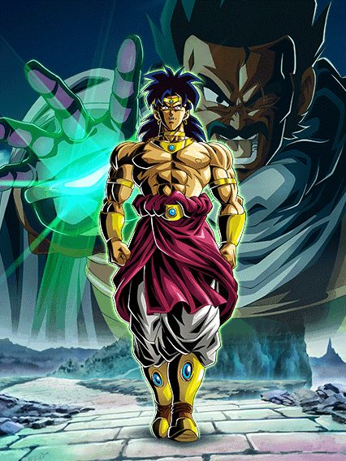
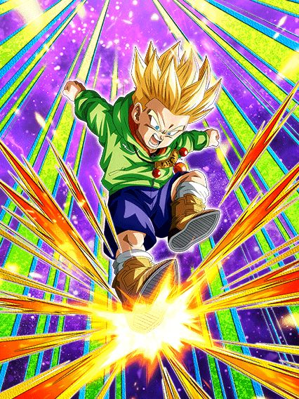
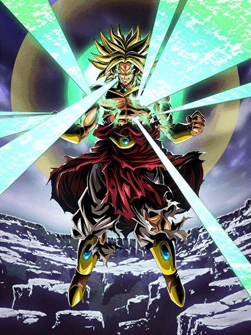
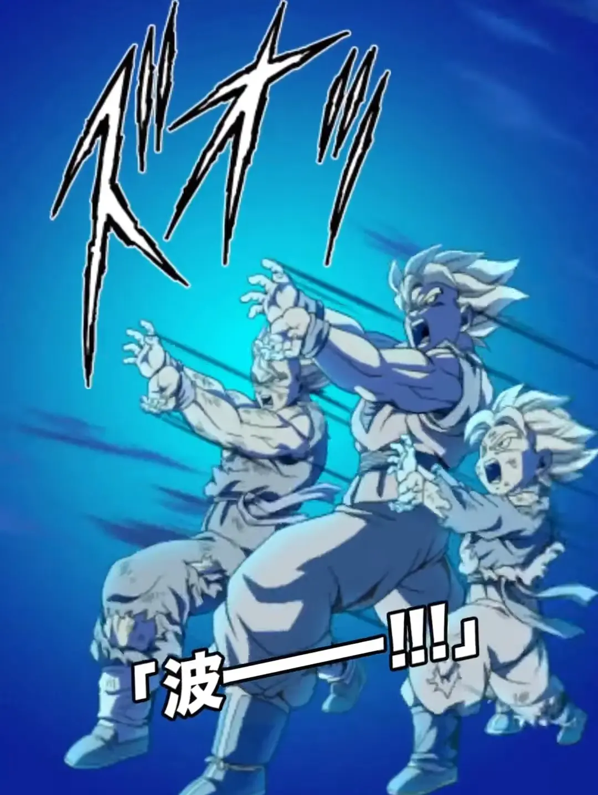
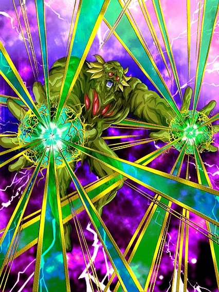
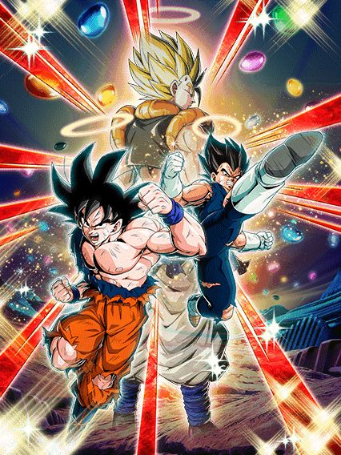
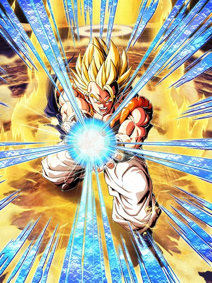
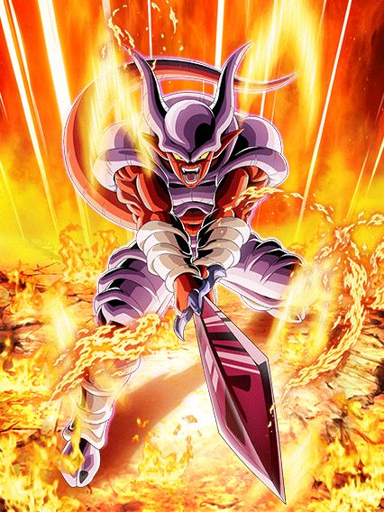

Essa celebração de downloads parecia bem promissora e teve um começo muito bom, se mostrando muito melhor que a celebração do ano passado
Mas só.. não foi
Apesar dos personagens bons, a celebração em si foi bem.. complicada, eu diria
Essa celebração de downloads parecia bem promissora e teve um começo muito bom, se mostrando muito melhor que a celebração do ano passado
Mas só.. não foi
Apesar dos personagens bons, a celebração em si foi bem.. complicada, eu diria
A MAIS PURA PEDRADA.
Mais uma celebração de downloads só pode significar mais uma música temática
Essa aqui ficou muito boa cara, é perfeita pro Broly
Uma coisa é que a produção da música parece um pouco mais séria, acho que eles realmente tão investindo nessa parada, já que os raps do Cooler pareciam ser algo bem mais meme
Ou não né, vai saber..
O salvador de cards antigos.
Bom, esses caras são líder pra Power of Wishes, finalmente deixando a Bulma LR relevante de novo
A passiva deles é baseada em Ki, já que a cada 3 de Ki, eles ganham 30% de DEF, chegando a 240% se estiverem com 24 de Ki, e pra ajudar, eles mudam orbs pra PHY, então é tranquilo
Além disso, se tiverem pelo menos 18 de Ki, tem mais ATK e lançam 2 adicionais que tem 50% de chance de serem supers
Sobre o suporte deles.. nada demais, só dão 50% de ATK pra todos aliados sem restrição e caso tenha um aliado Movie Heroes ou All-Out Struggle, eles dão 77 de DEF por 2 turnos pra todo mundo, ou seja, 154% de suporte se tiverem 2 no time
Eles tem 30% de redução de dano.. mas só contra supers, o que é estranho, mas ok
Bom, a partir do turno 5 da luta ou com menos de 77% de HP, fique a vontade pra usar a standby deles

Mais uma standby tank que desmantela o boss, brabo
O Goku não pode atacar, mas mantém as mecânicas de Ki que ele já tinha na base, então pegando 24 de Ki ele ainda tem um monte de defesa
A novidade é ele também ganhar 59% de redução de dano, e ele tem defesa ativa, então você vira uma parede
O suporte deles é alterado pra 7% de DEF pra todos aliados por orb PHY pega por 2 turnos, o que pode ser melhor q o suporte normal se vc pegar um monte de orb né
Cada ataque recebido carrega a standby em 3, enquanto cada orb PHY pego carrega em 2, e qualquer outro orb pego carrega 1
Com 41 cargas ou mais, você usa o socão muito brabo que dá um dano absurdo
E é isso, um card muito focado na defesa e suporte, mas que pode virar uma bomba nuclear dependendo de quanto vc carregar a standby.

Tá aí um caso engraçado: O personagem secundário do banner ser da mesma cor que o card principal.
Esse cara é um suporte desvia-ou-morre interessante
A partir do turno q eles aparecerem, eles dão scouter por 2 turnos e tem 60% de chance de desvio por 4 turnos
Eles dão 30% de ATK e DEF pra Super Class inteira, e mais 30% pra All-Out Struggle e Movie Heroes
Ele também cura 30% de HP no final do turno.. é algo
Bom, a partir do turno 5 ele vai automaticamente trocar pro Vegeta, então você não corre tanto perigo com o desvio

Pq esse cara tem animações melhores que a celebração de downloads passada inteira?
Assim que você trocar pro Vegeta, ele ganha +300% de ATK, dá crítico garantido e muda orbs AGL, TEQ e STR pra PHY somente por um turno, já sabe oq significa né?
Se a partir do turno 5 você pode usar a standby do Trio SSJ, e esse cara aparece no turno 5.. o dano vai ser insano.
Tirando esse buff absurdo nesse primeiro turno, o Vegeta tem 50% de redução de dano incondicional e lança um adicional com 50% de chance de ser um Super Attack sempre
Apesar de 50% de redução de dano não andar sendo suficiente, é um card muito útil.

O Dokkan desistiu das condições de Active horríveis.
Só pra constar, QUE ARTE LINDA MANO, slk, muito bom
O Broly lidera 200% pra Movie Bosses, o que é meio questionável, mas talvez seja o motivo de pq o Cell Max veio logo pro Global
Ele não pode atacar, mas é literalmente uma parede, já que ele tem defesa ativa e dá 60% de ATK e DEF pra Extreme Class, e se estiver no slot 1, tem 90% de redução de dano por 1 turno
Se estiver nos slots 2 ou 3, a redução cai pra 70%, mas ele dá 50% de chance de crítico pra Extreme Class, então eu diria que é uma troca justa
Enfim, a Active Skill do Broly fica disponível imediatamente, então você pode escolher transformar ele logo de cara ou transformar no turno seguinte

Não vai ter jeito, vou ter que matar o Paragus.
Por 3 turnos esse cara tem 76% de redução de dano, que depois cai pra 50%, além de ganhar +200% de DEF e ter defesa ativa caso esteja no slot 1
Se ele receber um ataque, ele lança um adicional com 50% de chance de ser Super, e se estiver nos slots 2 ou 3, lança um Super adicional garantido
Não satisfeito, esse cara builda 5 de Ki e 50% de chance de crítico com 5 ataques, e ele ainda STACKA 50% de ATK no Ultra Super Attack QUE É EM ÁREA, insano
Ele tem um buff meio meh contra apenas Pure Saiyans ou Earth-Bred Fighters, que é mais Ki e +50% de chance de crítico
Além disso, se estiver com 24 de Ki, ele quebra 1 ação dos inimigos todo turno
Pra finalizar, a partir do turno seguinte após se transformar, o Broly pode matar o Paragus e ganhar 26% de ATK e DEF multiplicativos em cima de tudo que ele já tem, é MUITO absurdo
Esse cara linkado com o Broly LR do aniversário é uma rotação estúpida de quebrada..
Aparentemente esse cara não vai ganhar EZA nessa celebração, por isso ele tá aqui.
Bom, esse Paragus é um card meio.. contraditório?
Vamo lá, ele é um suporte de 25% de ATK, DEF e chance de crítico pra Pure Saiyans, e se tiver um Broly no time, ele dá outros 25% de ATK e DEF pra ele
O Paragus também ganha 50% de chance de desvio que aumenta pra 70% se ele estiver no slot 3.. só que.. a partir do turno 6?
E pra piorar mais, o novo Broly lidera Movie Bosses.. e o Paragus não tá em Movie Bosses, ou seja, querem que você use ele em Pure Saiyans?
Eu acho esse cara interessante mas esse desvio zuado é realmente problemático, quem sabe no futuro eles não mudam isso com o EZA dele
O melhor TUR do jo- pera que EZA é esseKKKKKKKKKKKKKK
Eu realmente quero saber qual o problema dos devs com EZAs dos personagens do Saiyan Day, já que todos até agora foram medíocres ou restritos demais, que é o caso desse cara
O stack do Broly foi buffado de 20% de ATK e DEF no Super Attack pra 50% de ATK.. e ainda 20% de DEF
A redução de dano e chance de crítico q ele tinha foi buffada pra 26%, além do adicional dele ter sido buffado pra ter 50% de chance de ser um Super Attack
E aí começa o problema..
A única restrição que ele tinha que era enfrentando Pure Saiyans ou Hybrid Saiyans teve pouquíssimas alterações, só aumentando a chance do Super adicional dele pra 70%, e colocando Movie Heroes na restrição pra ajudar
Mas por que parar por aí? É muito melhor colocar outra restrição no cara
O Broly ganha mais 15% de chance de crítico e redução de dano, além de lançar um Super Attack adicional se tiver um inimigo com Goku incluído no nome..
É simplesmente intankavel cara, ele stacka muito devagar e é estupidamente restrito
Pelo menos ele é melhor que o goku black int né?

Ótimo F2P com grande potencial.
Esse cara simplesmente tem 50% de chance de desvio incondicional que aumenta pra 70% se ele estiver no slot 1
Além disso, ele ainda tem uma mecânica similar ao Hirudegarn INT, ganhando +20% de chance de desvio no próximo turno se ele desviar pelo menos 5 vezes
Desviar 5 vezes também é a condição da Active Skill dele, que atrai todos os ataques pra ele por 1 turno
Tirando isso, ele é um suporte de Hybrid Saiyans, dando 25% de ATK e DEF pra categoria, e por 4 turnos, +25% pra Gohans e Gotens, o que é bem útil
Eu não confiaria tanto na Active Skill dele, já que, mesmo se ele tiver com 90% de chance de desvio, o primeiro tapa q ele levar já é morte na certa
Pelo menos ele nem vai ganhar EZA nessa celebração, oq significa que ele ainda vai ficar mais forte doq já é.

2 personagens F2Ps bons.. seguidos?? Impossível.
A Videl é uma ótima suporte pra Movie Heroes (sendo esse o único time q ela funciona tmb kkkk)
Ela tem 50% de chance de desvio e mais 15% no slot 1 se tiverem pelo menos 3 Movie Heroes no time
Ela também dá 30% de ATK e DEF pra todo mundo incondicional, o que é ótimo
Se ela estiver no slot 1, ela dá +20% de ATK e DEF pra geral por 2 turnos
E ela ainda ganha 50% de DEF no Super Attack, ganha +120% de DEF quando desviar, e aí vem o mais quebrado dela..
Cada desvio que a Videl fizer no turno aumenta +50% de DEF e 8% de chance de desvio, sem nenhum limite
Ou seja, um card F2P consegue chegar em desvio garantido com níveis absurdos de defesa, isso sim é impressionante.

Morreu em 2023, reviveu em 2024
Bem vindo de volta, Goku Blue Kaioken STR.
O Broly ainda é meio perigoso na forma base, mas como ele se transforma no turno 4, você não precisa se preocupar tanto com ele
Sua única prioridade deveria ser lançar um Ultra Super Attack, já que o Broly ganha 120% de ATK e DEF lançando um Super, e ganha +120% se for um Ultra, fazendo a defesa dele ser minimamente decente
Além disso, o Ultra Super Attack dele agora stacka 50% de ATK, deixando a transformação dele ainda mais forte
Em geral, só proteja esse cara no começo da luta, pq ele não tem nenhuma mecânica defensiva, então ele vira alvo fácil se o boss já começar difícil
Mas quando chegar no turno 4..
Um sábio uma vez disse: "Sua defesa é irrelevante se o boss morrer primeiro"
O Broly é uma máquina de puro dano, atingindo valores completamente absurdos de ATK
Esse mano simplesmente tem mais de 500% de ATK só fazendo um Ultra Super Attack, sendo um personagem que stacka e que tem uma Active Skill de dano multiplicativo.. um completo monstro
Fazendo um Ultra Super Attack ele também ganha defesa ativa no turno, então DE JEITO NENHUM coloque esse cara no slot 1, obrigado
Como se não bastasse todo o dano q ele já tem, ele ainda ganha +100% de ATK se o inimigo tiver debuffado, e esse cara pode dar Super até 4 vezes por turno
A única coisa que vem muito em falta nele é crítico, já que ele tem basicamente nada
Então, com uma build boa no Hidden Potential, os vários Brolys pra linkar e o novo LR dando suporte, esse cara vira um deus.

Como mata esse personagem mesmo?
Ao contrário de todos os outros Brolys, esse Broly não é uma máquina insana de dano, e sim um tank suporte essencialmente invencível
Esse cara é lider pra nova categoria Uncontrollable Power, que é meio zuada mas tem opções interessantes
E ele já começa a luta dando 40% de DEF pra Extreme Class por 4 turnos KKKKKKKKK
O Broly tem 60% de redução de dano pra sempre, sempre cura HP (independente da orb que você pegar), e a partir do quinto turno dele, ele protege o time inteiro com um revive
Ele ainda tem um domínio que pode ser ativado a qualquer hora se todos aliados forem Uncontrollable Power, e enquanto o domínio estiver aberto, ele tem defesa ativa e buffa a categoria ainda mais
Depois de ele atacar no domínio, ele fica super efetivo pro resto da luta, o que é bem útil
E caso você consiga reviver, o Broly simplesmente passa a dar 60% de ATK e DEF pra Uncontrollable Power KKKKKKKKKKKKKK
Em geral, um faz-tudo Extreme Class que ajuda muito os vilões.

Uhhhhh ela é um card diferente em cada slot?
Essa Videl tem a arte e animações boas, mas o kit dela é meio bagunçado..
Pra começar, ela tem 30% de chance de desvio sempre.. mas aí coisas acontecem dependendo do slot que ela tá
Basicamente, no slot 1 ela é completamente inútil, não coloque ela lá.
No slot 2, ela dá 40% de ATK e DEF pra Dragon Ball Seekers e Earth-Bred Fighters, além de ganhar 20% de redução de dano por ataque feito no turno
No slot 3, o suporte dela aumenta pra 60% e ela ganha 20% de chance de desvio por ataque feito no turno ao invés da redução de dano.. só que ela não tem NENHUM adicional na passiva
Sim, se você conseguir, dá pra chegar até 70% de chance de desvio, o que é bom, mas é completamente aleatório né..
Se eu ganhasse uma moeda a cada vez que um Gohan STR LR fosse um dos melhores cards do jogo..
Esse cara builda +200% de ATK e 150% de DEF atacando 5 vezes, e ele tem vários adicionais na passiva
Um adicional com 70% de chance de ser Super se estiver com 18 de Ki, um Super adicional se estiver com 24 de Ki, e ainda tem o adicional do Hidden Potential
E o dano dele é completamente explosivo, mesmo que ele não stacke nada, já que cada super que ele faz no turno aumenta o ATK em 77% temporariamente, super balanceado né
Além disso, ele ganha defesa ativa se tiver um Earth-Bred Fighters ou Kamehameha no turno com ele, e se o HP cair abaixo de 77%, ele ganha 50% de chance de desvio pq sim, balanceado.
E a partir do terceiro turno do Gohan, ele já pode usar a Standby, uma condição fácil mais uma vez ein
")
O dano.
O Gohan não pode atacar mas vira uma parede, ganhando 77% de redução de dano forem Super Class e ainda tem defesa ativa
Além disso, ele ainda ganha +50% de DEF por orb pega no turno, podendo tankar basicamente qualquer Super do jogo inteiro 💀
Bom, sobre a Standby em si, o Gohan aleatoriamente coloca 7 esferas do dragão nas orbs
Coletando o orb, você coleta a esfera junto, então é bem simples
Cada orb pega aumenta 1 carga e cada esfera do dragão aumenta em 4 cargas
Pegando as 7 esferas e pelo menos 35 cargas, você tem a melhor animação do jogo

Só pra constar, essa standby é a primeira do jogo a ter dano super efetivo, não necessitando de ficar rezando por um crítico ou precisando do suporte da Bulma LR
Em geral, personagem desbalanceado e forte pra caramba, clássico momento Gohan.

É oficial, o Bio-Broly ganhou um LR antes do Kid Buu.
Na intro dele, ele ganha muito Ki, lança um Super Attack adicional e cura HP por 4 turnos, o que já é bem útil
Se a rotação toda for Uncontrollable Power, ele ganha 30% de redução de dano, e ainda ganha +30% quando dá Super
Não só isso, mas a cada turno ele builda 6% de redução de dano, chegando a até 90% no total
A partir do turno 7 ele passa a perder 6% de redução, mas é tempo suficiente pra tankar essencialmente tudo
Não só isso, mas a Active Skill dele dá defesa ativa por um turno e atraí todos os ataques pra ele, num turno onde o cara tá beirando a invencibilidade
ISSO SIM é um card F2P, já que ele é muito restrito, mas no time que ele funciona, ele é MUITO BOM
Por favor, façam mais cards como ele.
Os pirralhos são bons agora.
Esses caras tem MUITO ATK e DEF, tendo 2 chances separadas de 70% de terem 100% de ATK e DEF, chegando ao máximo de 450% de ATK e DEF
Eles tem 30% de chance de desvio, e conseguem buildar +50% de chance e +100% de ATK e DEF desviando ou levando 5 ataques
Além de tudo isso, se tiver um aliado Kamehameha no turno, eles ganham 30% de redução de dano e 30% de chance de crítico, sendo q eles já tem 50% de chance de crítico base
Então vamo lá, esses caras tem valores de ATK e DEF muito altos, tem 80% de chance de desvio, 80% de chance de crítico, 30% de redução de dano e a Active Skill que dá desvio garantido por 1 turno.. será que é suficiente?
Se não ficou óbvio que eles são o melhor EZA de TUR, então que fique claro: Eles são.

Golden Freeza LR (Versão F2P)
Esse cara tem 30% de redução de dano enfrentando 1 inimigo, e tem mais 60% que vai diminuindo a cada 2 turnos
Então sim, ele tem 90% de redução de dano no turno 1, o que é bem insano
Bom, tirando a redução, ele não tem nada de muito especial, a defesa é meio baixa e o dano dele é bem tranquilo
Caso você consiga sobreviver até o DÉCIMO TURNO desde a aparição dele, o Broly ganha 40% de redução de dano de volta, ficando com 70% até o fim da partida
Só que chegar no turno 10 com o time de Brolys é impossível, então use esse cara em eventos curtos e é tranquilo.

O primeiro Dokkan Fest se torna o melhor Super EZA.
Esse cara é basicamente o EZA do Turles LR, tendo mecânicas similares a ele, só que é um Broly
Ele builda 150% de ATK e DEF a mais e 50% de redução de dano atacando 5 vezes
A cada 2 rainbow orbs pegas no turno, o Broly lança um Super Attack adicional e ganha 50% de chance de crítico, podendo lançar até 4 Supers num turno com o Hidden Potential, e ter crítico garantido
E felizmente ele cria os próprios orbs, já q ele muda orbs pra rainbow se tiver um Pure Saiyans ou Planetary Destruction no turno, o que é bem fácil
O Broly simplesmente humilha o EZA do Broly INT, goat demais.

Ok, acho que a Celebração de Downloads não é tão ruim assim.
Pra começo de conversa, a 50% de chance de mudar orbs agora é garantida, então já começa bem
Eles lançam um adicional com 70% de chance de ser Super, e um Super adicional garantido se vc pegar 1 simples rainbow orb
E agora eles STACKAM ATK em ambos Supers, balanceado
Além disso, eles tem 40% de redução de dano e ganham +20% no primeiro turno deles ou se estiverem abaixo de 70% de HP
E se eles estiverem acima disso.. já sabe né

Uma palavra: Invencível.
Ainda muda orbs, ainda tem 40% de redução, ainda tem o Super adicional com 1 rainbow orb.. mas tem mais..
Pelos primeiros 5 turnos dele, além do Scouter ele ainda tem +40% DE REDUÇÃO DE DANO antes de atacar
E pegando uma rainbow orb ele fica com DEFESA ATIVA além do Super adicional
Esse cara no slot 1 tem 80% de redução de dano com defesa ativa juntamente com um dano estupidamente explosivo e ainda ajuda o time
E sim, tem mais, já que ele dá crítico garantido pra sempre e ele tem 50% de chance de desvio temporariamente se for levar um Super.. pq sim.
Esse cara tem basicamente todos os erros do Vegetto STR EZA consertados, é incrível.

Será que o time do Broly precisa de mais buffs?
Esse cara tem defesa ativa irrestrita e infinita junto com 22% de redução de dano, o que já é um bom começo
Por 1 turno, ele lança um adicional com 70% de chance de ser um Super, o que ajuda na buildagem dele já que ele só precisa atacar 3 vezes pra ter +166% de ATK e DEF e 66% de chance de crítico KKKKKK
Estando nos slots 1 ou 2, o Janemba tem +22% de redução de dano e nos slots 2 ou 3 lança um adicional com 70% de chance de ser um Super
Como se a defesa absurda e redução de dano não bastassem, ele ainda tem a nulificação de Supers de Ki e agora tem 50% de chance de desvio temporariamente contra Supers, muito balanceado
E tem o Rage Mode dele né

Se lembra de estar impressionado com o Piccolo Laranja dando 5 milhões de dano no Super? Então..
O Janemba muda TODOS os orbs pra PHY e ganha 16% de ATK por orb pega
Então é, um Rage Mode tem 368% de ATK, bem balanceado
Ah, esqueci de mencionar que esse cara tem CRÍTICO GARANTIDO KKKKKKKKKKKKKKKKK
Belo EZA.
Você chegou ao fim dessa página!
Obrigado por ler tudo, e fica a vontade pra ver outras